Objetivos
●Conocer los fundamentos de la ciberseguridad general.●Comprender la ciberseguridad en el contexto de las organizaciones.●Conocer los aspectos de seguridad en redes y sistemas.●Conocer los temas principales que aborda la seguridaddefensiva.●Conocer los principales procesos de evaluación de seguridad ofensiva.●Adquirir herramientas para potenciar las tareas profesionales
●Introducción●Criptografía●Gestión de Identidades y Accesos●Autenticación
Criptografía
Una PKI proporciona una infraestructuragestionada para
○Creación de certificados
○Mantenimiento de los certificados
○Revocación de certificados
Utiliza una jerarquía de sistemas de infraestructura para crear certificados digitales. Los certificados digitales contienen la clavepública
Firma
Esteganografia:
El Arte de la Ocultación de datos ("escritura cubierta")Los archivos están ocultando informaciónadicional (secreta o sensible)Puede esconderse en una variedad de formatos○Imágenes (bmp, png, gif, jpg)○Documentos de Word○Archivos de texto
La criptografía proporciona confidencialidad pero no secretoEn la esteganografía es posible que no se detecte que se está enviando un mensajeLa verdadera intención está oculta
Identidad Digital
Referencia a una entidad y engloba en esta todas las acciones realizadas en la red. Es clave para definir el acceso y pueden cambiar con el tiempo. Confiar en el enlace entre una identidad real y una digital require VALIDACIÓN

Autenticación y Autorización: La identidad es lo que uno dice ser. La Autorización determina a qué tiene acceso o puede hacer alguien después de la Autenticación. La Autenticación es la validación de la identidad frente a un sistema
Estandares SAML y 0Auth2
Oauth2 estandar para facilitar la autorización. Permite a un usuario del sitio A compartir su información con el sitio B●Lo hace sin compartir toda su identidad, protegiendo sus credencialesSAML es un estándar orientado a SSO, integra el proceso de Autenticación.●Casos de Uso - Acceso a aplicaciones desde un portal
Simple Sign-On SSO: Procedimiento para acceder a varios sistemas con una instancia de autenticación+ Reduce el uso de múltiples contraseñas+ Permite administración centralizada y reduce tiempos de soporte- Punto de falla único- Complejidad de implementación
Control y administración: El ABM debe realizarse en todos los sistemasNuevo Usuario nuevo■Alta en el sistema central 🡺 reglas para alta en ERP, intranet y VPNBaja Usuario■Baja en el sistema central 🡺 reglas para baja en otros sistemasCambio de puesto■Baja en algún sistema y alta en otros
Gestión de Acceso privilegiado (PAM): Es un término para designar la administración para las identidades que requieran accesos especiales por encima de los usuarios “estándares”Hace énfasis en PoLP (Principio del Mínimo Privilegio), asignar los accesos mínimos para desempeñar una función

Gestionar las cuentas con privilegios (Credenciales, Configuraciones)Supervisar actividad (Sesiones, acciones)Aislar accesos con privilegios y exigir MFARotar contraseñas después de su usoLimitar los “Administradores Locales”Gestionar y Rotar Claves SSHNo utilizar accesos compartidosRealizar ejercicios de RedTeam
 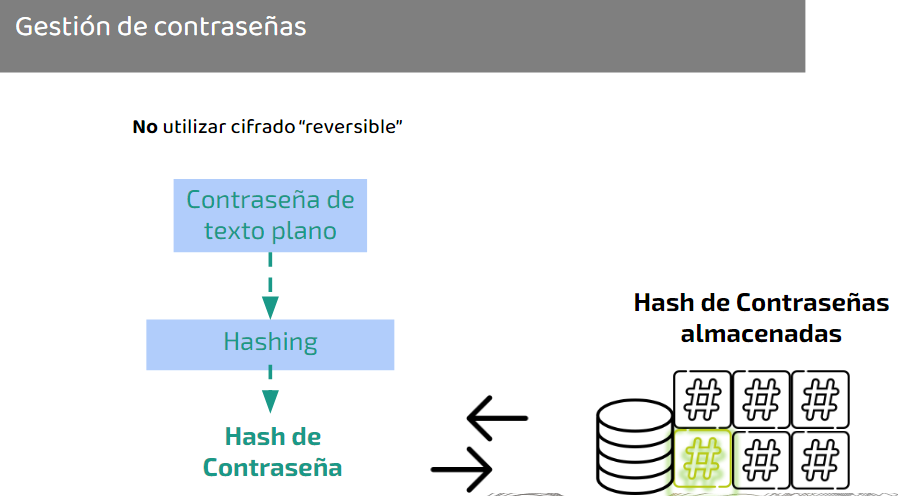
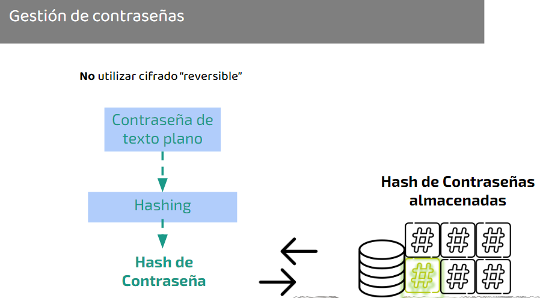
Políticas y requisitos de contraseñas: Obligatorio su usoIntervalo de cambio establecidoLas cuentas se bloqueanUna letra, un número y un carácterespecialNo reutilizar las N contraseñas anteriores
Atauqes a las contraseñas Ataque del diccionarioFuerza brutaAtaque HíbridoAtaque RainbowtablesSniffingIngenieria SocialShoulder Surfing
Ejemplo de un ataque de contraseñas1.Encontrar una identificación de usuario válida2.Encuentre el algoritmo de encriptación utilizado3.Obtener la contraseña cifrada4.Crear una lista de posibles contraseñas5.Cifrar cada contraseña de la lista6.Determinar si hay una coincidencia
Se demuestra que la entidad es la identidadque dice ser a traves de :•Algo que sabe•Algo que tiene•Algo que es•Algún lugar en el que esté (*)•Como se comporte
 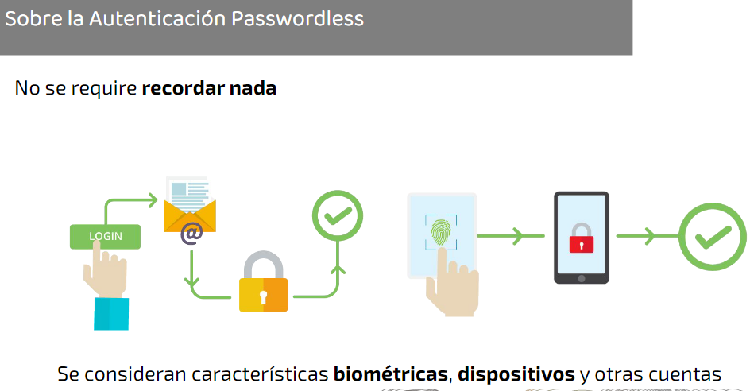
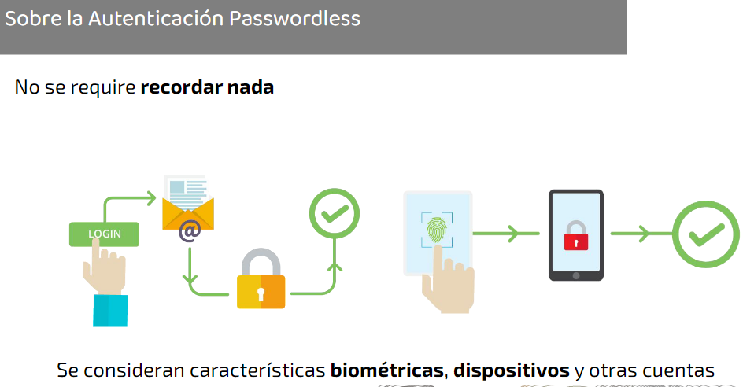
Objetivos: ●Conocer los fundamentos de la ciberseguridad general.●Comprender la ciberseguridad en el contexto de las organizaciones.●Conocer los aspectos de seguridad en redes y sistemas.●Conocer los temas principales que aborda la seguridaddefensiva.●Conocer los principales procesos de evaluación de seguridad ofensiva.●Adquirir herramientas para potenciar las tareas profesionales.
Agenda: ●Seguridad en los datos●Seguridad en Sistemas Operativos●Seguridad de dispositivos móviles
Sistemas de DLP: La prevención de la pérdida de datos se centra en la protección de los datos contra el acceso o la copia no autorizadaSe combinan la inspección de contenidos y el contexto de los archivos, para hacer una clasificación. Luego se aplican reglas●Sobre la Red●Sobre los Agentes
Sistemas de red capaces de realizar inspección de contenido:●Protección de Navegación●Protección de correo electrónico●Detección de intrusos●Firewalls de nueva generación ●Firewalls de aplicaciones web●Firewalls de bases de datos ●Monitores de seguridad de la redAtención al cifrado!
●Clasificación automática de archivos y recomendaciones●Aplica controles locales para contener la fuga de información●Proporcionar notificaciones en pantalla y violaciones de la política●Puede requerir que el usuario proporcione la razón de un comportamiento extraño
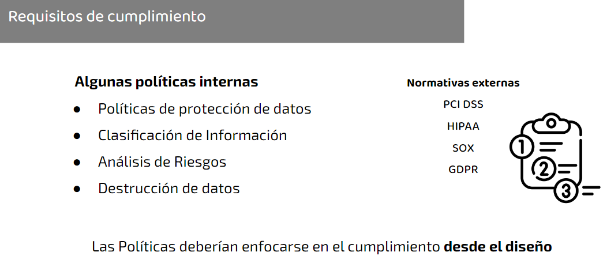Sobre Windows: ●Controlador de dominio●Servidor web (IIS)●Virtualización Hyper-V●Servicios de escritorio remoto●Acceso directo y VPN●Servicios de archivo e impresión●Servidor DHCP●Servidor DNS●Servidor de políticas de red
Medidas de protección: ●Gestión local de equipos ( CompMgmt.msc | Powershell | Net.exe )●Grupos de Trabajo vs Dominio●Políticas de Grupo ( gpedit.msc )●Actualizaciones●Access Control List Entry ( icacls.exe )●Registro de Windows ( Regedit.exe )●Firewall●Cifrado (Bitlocker)
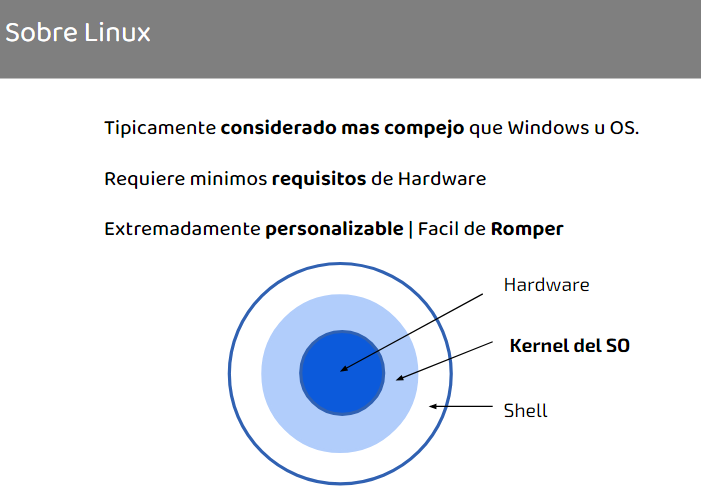 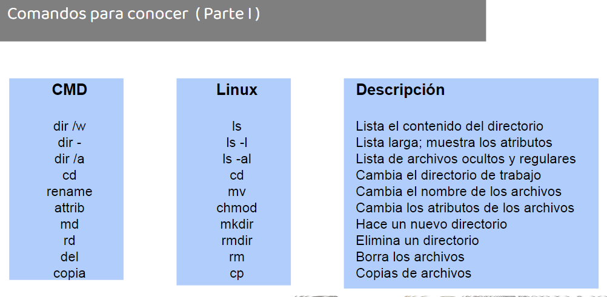 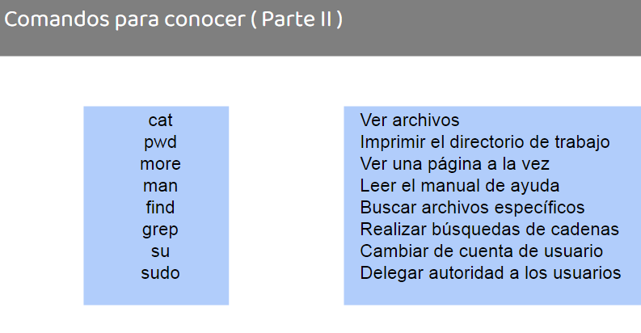 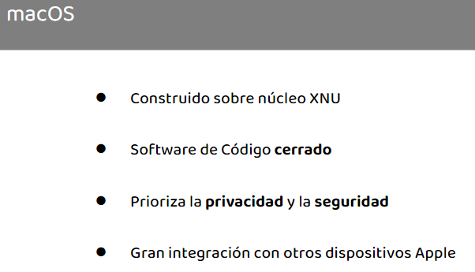
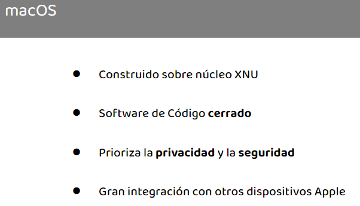
Seguridad de MacOS: ●Políticas de Contraseñas●Firewall●Actualizaciones●Apagar los servicios innecesarios●Limitar el uso compartido de servicios●FileVault | Gatekeeper
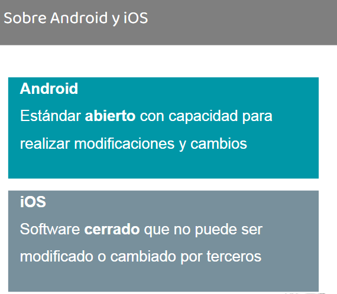Funciones de seguridad de Android●Seguridad en Store de aplicaciones●Escaneo activo de Aplicaciones●Sandbox virtual●Gestor de dispositivos●Encriptación integrada●Android Pay
Funciones de seguridad de IOS●Seguridad del Sistema●Cifrado y Protección de datos●Seguridad en la red●Seguridad de las aplicaciones●Servicios de Internet●Control de dispositivos●Controles de Privacidad●Apple Pay
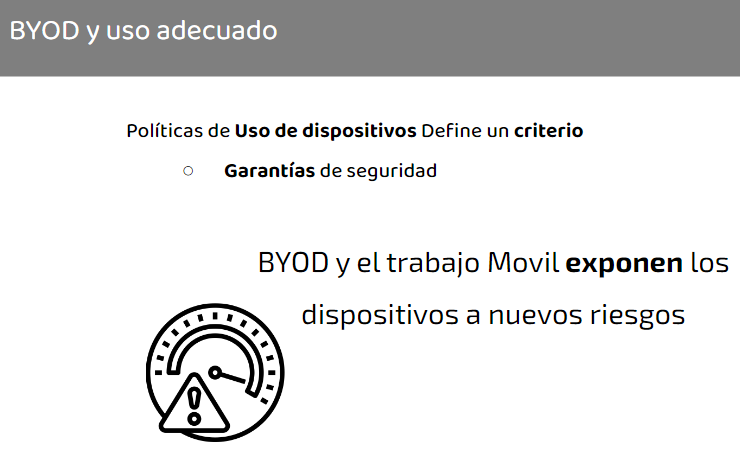Gestión de dispositivos●Asignación y Registro de dispositivos●Mantenimiento de dispositivos●Protección y controles●Tratamiento para informaciónconfidencial●Conexiones y accesos●Monitoreo y notificaciones●Destrucción○